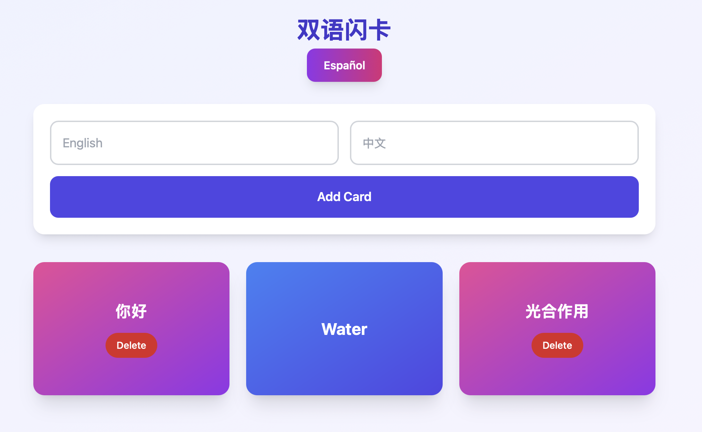
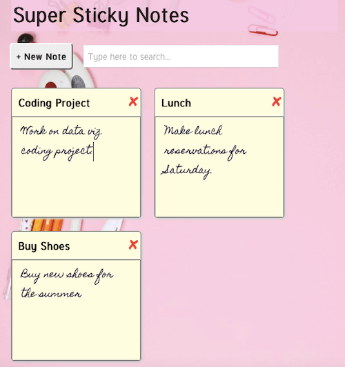
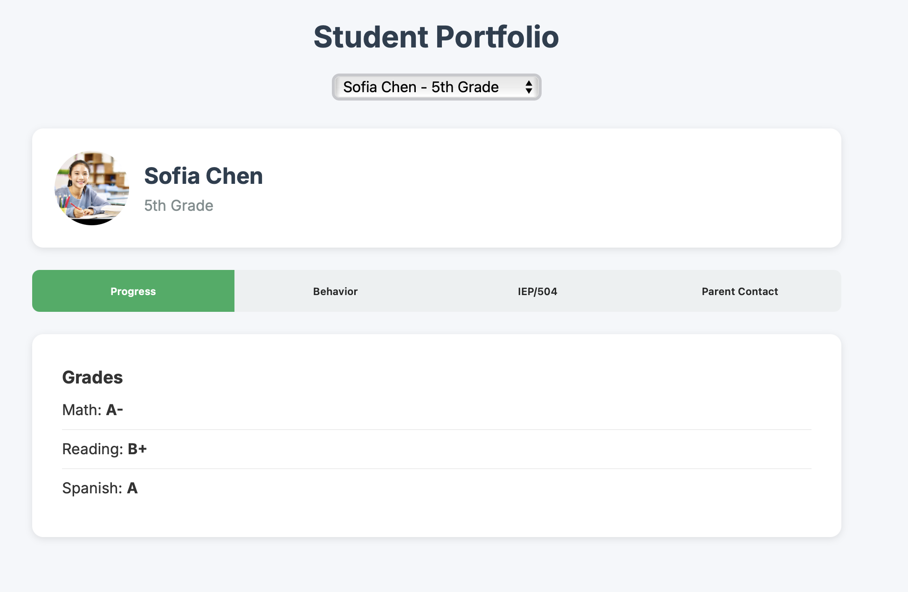

EdTech-Relevant Projects
Tools I’d use in my own classroom — built with teacher empathy.

Bilingual Flashcard Generator
Lets teachers upload vocab CSV → auto-generates printable Spanish/English/Mandarin flashcards
EdTech Use: Saves 2+ hrs/week. Perfect for ELL, World Languages, SPED.

Super Sticky Notes for Language Teachers
Drag-and-drop sticky notes in Spanish/English. Search, export to PDF, persists across sessions.
EdTech Use: Lesson planning, vocab walls, sub plans, IEP brainstorming.

Tabbed Dashboard for Student Portfolios
Clean, tabbed UI for teachers to track progress, behavior, IEPs, and parent contact in one place.
EdTech Use: Reduces tab-switching. Mobile-friendly for hallway check-ins.